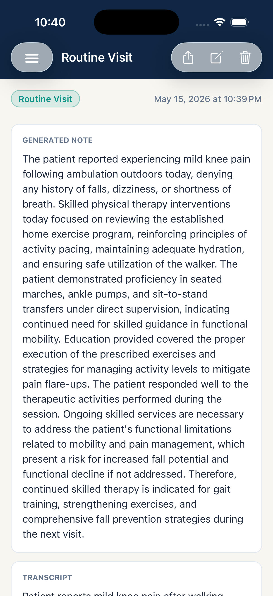

1
Capture
Record or type the session context you need for a note.
Local clinical note drafting for clinicians who want to capture a session, generate a draft, review it, and export it without turning the app into another cloud chart.
CareNote is meant to sit between your session and your final system of record. It helps produce a reviewed draft, not a signed medical record.
Record or type the session context you need for a note.
Generate a structured or freeform note draft with on-device AI.
Edit the draft and verify every clinically relevant detail.
Copy, share, email, or export only after the review warning is acknowledged.
Your clinical content is intended to stay on your device unless you choose to export it. CareNote does not provide cloud storage, team accounts, or EMR integration.
Local notes and retained audio are protected with app-level encryption and device-bound access controls.
Before content leaves the app, CareNote asks you to confirm review, authority to share, and destination appropriateness.
The app is built without advertising, analytics, or crash-reporting SDKs in the production dependency path.

CareNote is designed for careful individual use. It is not a substitute for professional judgment, legal review, or your final documentation system.
Generated output can be wrong or incomplete. You are responsible for reviewing every draft before using it.
If your workflow requires a Business Associate Agreement, CareNote is not the right tool for that use case.
CareNote is a local capture, draft, and export tool. Your official record remains wherever you document care.
These pages are wired for GitHub Pages and can be finalized once the legal entity, contact email, postal address, and domain are confirmed.